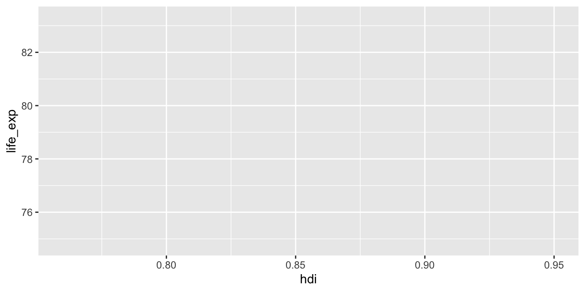
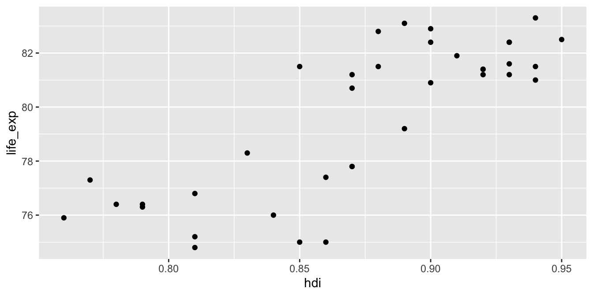
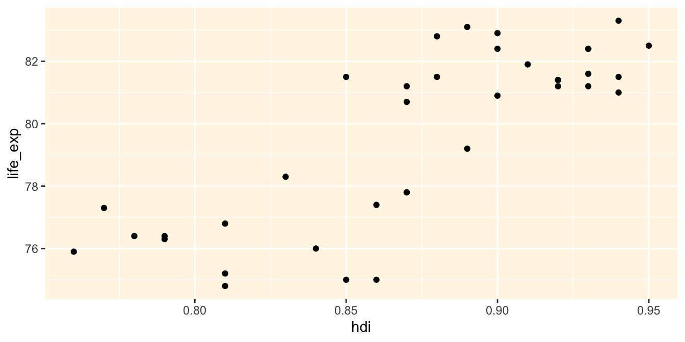

ggplot(data = countries)
V této kapitole se seznámíme se základy vizualizace dat pomocí balíčky ggplot2, který je (nepřekvapivě) součástí Tidyverse. S tímto balíčkem jsme se již krátce setkali v kapitole věnované faktorům (Kapitola 6), kde jsme využívali funkci qplot(). Balíček ggplot2 ovšem nabízí mnohem více.
Ačkoliv to nemusí být na první pohled zřejmé, i vizalizace dat je předmětem vědeckého výzkumu a teorie. Teoretické základy balíčku ggplot2 leží v takzvané “grammar of graphics” (Wilkinson, 2005). Základnímí pilíři tohoto paradigmatu, tak jak je implementované zde, jsou takzvané scales, geoms a themes:
Scales jsou dimenze grafu, v kterých se nachází data. Jedná se osy grafu, ale také například o barvu nebo velikost.
Geoms jsou objekty, které fyzicky reprezentují data v grafu. Jde například o sloupce ve sloupcovém grafu nebo body v bodovém grafu.
Themes kontrolují estestickou stránku grafu, jako velikost nebo font písma, barvu pozadí nebo zda jsou v grafu přítomné vodicí přímky.
ggplot2 grafůJednotlivé složky se na sebe nanášejí ve vrstvách (layers). Tvorba každého grafu bude začínat funkcí ggplot():
ggplot(data = countries)
Funkce ggplot() vyžaduje minimálně argument data, pomocí kterého specifikujeme náš dataframe. Výsledkem je prázdné plátno. Druhým krokem je specifikovat dimenze (scales) našeho grafu. Toho docíleme pomocí funkce aes() (zkratka pro aesthetics) a argumentu mapping:
ggplot(data = countries,
mapping = aes(x = hdi, y = life_exp))
Pomocí funkce aes() jsme definovali dvě dimenze (scales). Ose X jsme přiřadili proměnnou hdi, a na osu Y jsme “namapovali” proměnnou life_exp. Výsledkem je graf s popsanými osami, nicméně pořád bez dat.
Slovo “mapovat” je zde používané v matematickém významu, tedy ve smyslu přiřazování elementů jednoho setu k elementům druhého setu. V našem případě přiřazujeme proměnné v datech k dimenzím v grafu. Od toho je odvozeno také jméno argumentu mapping.
Dalším krokem je přidání geomů, tedy objektů, které budou reprezentovat jednotlivé pozorování. V našem případě se nabízí zobrazit jednotlivé země jako body, využijeme tedy funkce geom_point():
ggplot(data = countries,
mapping = aes(x = hdi, y = life_exp)) +
geom_point()
Výsledkem je starý známý bodový graf (scatter plot), ve kterém je každý řádek dataframu reprezentovaný bodem. Posledním krokem je úprava vizuální stránky grafu, jako například barvy pozadí, Toho docílíme pomocí funkce themes(), která má řadu argumentů, mezi nimi i panel.background. Na to, jak přesně tato funkce funguje, se zaměříme v budoucích kapitolách:
ggplot(data = countries,
mapping = aes(x = hdi, y = life_exp)) +
geom_point() +
theme(panel.background = element_rect(fill = "#fff6e5"))
A to je v podstatě celá logika balíčku ggplot2! V následujících kapitolách si představíme nejpoužívánější dimenze/scales a geomy, a ponoříme se také do fungování funkce theme().